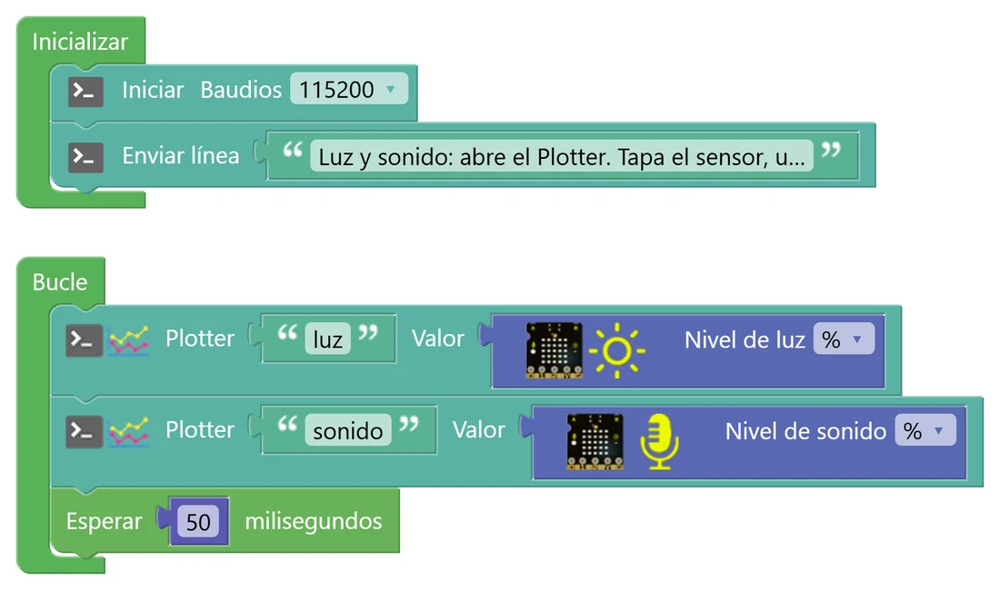
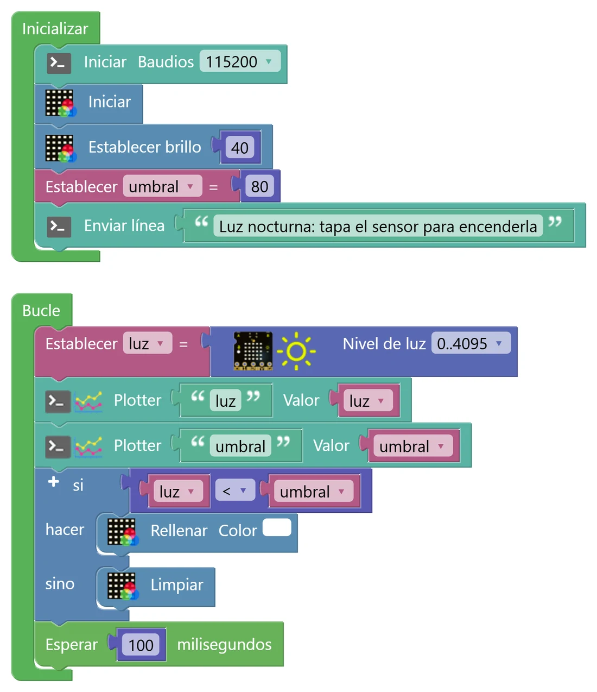
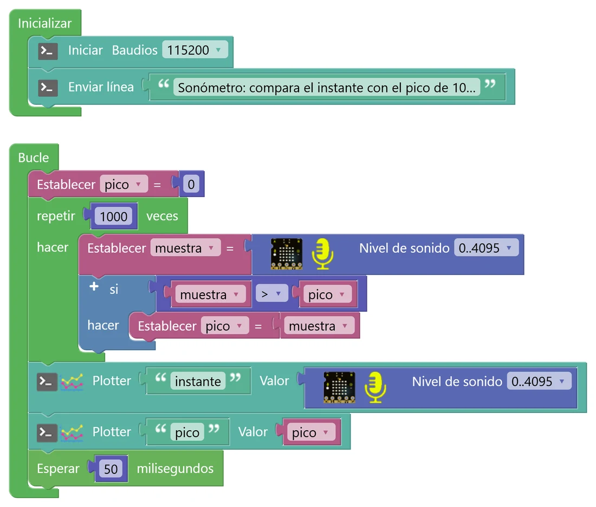

N4 Sensores y umbrales
Los botones solo dicen sí o no. Ahora la placa va a medir: cuánta luz le llega y qué pasa con el sonido a su alrededor. Aprenderás a mirar los datos en una gráfica, a desconfiar de un número suelto y a elegir el valor a partir del cual la placa reacciona: el umbral.
🎯 Objetivo
- Leer el sensor de luz y el micrófono de la placa, en porcentaje y en valor bruto (0 a 4095).
- Usar el Serial Plotter para ver los datos como una gráfica y guardarlos en CSV.
- Medir antes de decidir: elegir un umbral a partir de tus propias medidas.
- Entender por qué una lectura suelta del micrófono no sirve y cómo se calcula un pico.
🧠 Antes de empezar
Un sensor analógico no da 0 o 1, sino una tensión que puede tomar muchos valores. El ESP32 la convierte en un número con su convertidor analógico-digital (ADC) de 12 bits: 0 V es 0 y 3,3 V es 4095. Los bloques de luz y de sonido te dejan elegir cómo quieres el dato:
| Opción del bloque | Qué da | Cuándo usarla |
|---|---|---|
| % | De 0 a 100 | Para hacerse una idea rápida |
| 0..4095 (bruto) | El número que da el ADC, sin tocar | Cuando los valores son pequeños y necesitas más detalle |
💡 Para entenderlo: una regla con 4096 marcas
El ADC funciona como una regla: mide la tensión del pin y te dice en qué marca cae. Una regla con más marcas mide con más detalle. La del ESP32 tiene 4096 marcas (de 0 a 4095) porque usa 12 bits, y con 12 cifras binarias se pueden escribir 2 × 2 × … (12 veces) = 4096 números distintos.
El porcentaje es como medir con una regla que solo tuviera 100 marcas: cada marca agrupa unas 41 del ADC. Si lo que quieres medir es pequeño, como la luz de un aula, todo cae en las primeras marcas y casi no ves diferencias. Por eso, cuando los valores son bajos, usamos el valor bruto.
Los dos sensores están dentro de la placa: el de luz es un fototransistor (pin io39) y el micrófono está en el pin io35. Mira la infografía del N0 si no los localizas.
📈 El Serial Plotter
Está junto al botón Consola del editor. En vez de líneas de texto, dibuja una gráfica con cada dato que envías con el bloque Plotter (nombre y valor). Si pulsas sobre el nombre de una serie, la ocultas. Y puedes grabar los datos y descargarlos en CSV para analizarlos en una hoja de cálculo.
🐍 En Python
luz = leer_luz() if luz < umbral: encender() else: apagar()
Un umbral es solo un si que compara una medida con un número. Lo difícil es elegir bien ese número.
🧩 Programa 1 · Luz y sonido al plotter
El primer paso con cualquier sensor es mirarlo. Este programa envía al plotter el nivel de luz y el de sonido, en porcentaje, veinte veces por segundo.

🛠️ Móntalo paso a paso
- En Inicializar: Iniciar Baudios 115200 y un Enviar línea con un mensaje (Comunicaciones › Puerto serie).
- En Bucle: un bloque Plotter (Comunicaciones › Puerto serie). En su primer hueco, un texto con el nombre de la serie, luz; en el hueco Valor, el bloque Nivel de luz (micro:STEAMakers › Sensores) con la opción %.
- Debajo, otro Plotter con el nombre sonido y el bloque Nivel de sonido (micro:STEAMakers › Sensores), también en %.
- Termina con Esperar 50 ms (Tiempo): veinte datos por segundo.
- Sube el programa y pulsa Serial Plotter, junto al botón Consola. Para guardar los datos, usa el botón de grabar del plotter y, al terminar, descarga el CSV.
El nombre de cada serie es libre, pero que sea corto y sin espacios: es lo que verás en la leyenda de la gráfica y en la columna «nombre» del CSV.
- Sube el programa y abre el Serial Plotter.
- Durante unos 30 segundos: tapa el sensor de luz con el dedo, déjalo con la luz del aula y acércale la linterna del móvil. Después, silencio, habla cerca de la placa y da un par de palmadas.
- Graba los datos y descarga el CSV para tu porfolio.
La simulación usa valores parecidos a los que dio una placa real en un aula. Los tuyos pueden ser distintos: por eso hay que medir.
- Apunta en una tabla el valor de luz tapado, con la luz del aula, junto a la ventana y con la linterna. ¿Te sorprende el valor del aula? ¿Cuántos «escalones» de porcentaje hay entre tapado y aula?
- Con la linterna, la línea de luz tiembla mucho aunque no muevas nada. ¿Por qué crees que pasa? (Pista: muchas luces LED parpadean muy deprisa, tan rápido que tu ojo no lo nota).
- Habla sin parar delante de la placa. ¿La línea del sonido sube y se queda arriba, o salen picos sueltos con muchos ceros entre medias? Guárdate la respuesta: la explicación está en el Programa 3.
🧩 Programa 2 · Luz nocturna con umbral
Cuando hay poca luz, la matriz se enciende en blanco. Como en el aula el porcentaje se queda muy bajo, aquí leemos el valor bruto (0..4095), que tiene 41 veces más detalle. Además del dato, enviamos al plotter el umbral: así se ve una línea horizontal y sabes exactamente cuándo debe encenderse.

- Crea dos variables de número en Variables: luz y umbral. En Inicializar, además de la consola y la matriz (micro:STEAMakers › NeoMatrix), Establecer umbral = 80.
- En Bucle: Establecer luz = Nivel de luz (micro:STEAMakers › Sensores) con la opción 0..4095; dos Plotter (Comunicaciones › Puerto serie), uno con luz y otro con umbral; un si … sino (Lógica) con la condición luz < umbral (bloque de comparar de Lógica): Rellenar blanco o Limpiar; y Esperar 100 ms.
- Con este programa mide tus valores brutos: tapado y con la luz del aula.
- Elige el umbral entre los dos, más cerca del valor tapado. El 80 del ejemplo sirve para la placa con la que se preparó este material; el tuyo puede ser otro.
- Comprueba en el plotter que la línea de luz cruza la del umbral justo cuando la matriz cambia.
- Coloca la luz justo encima del umbral, casi tocándolo. ¿Qué le pasa a la matriz? ¿Qué problema tendría una farola que funcionara así?
- ¿Qué pasaría si eligieras un umbral de 300 en un aula donde la luz da unos 200?
- ¿Por qué crees que no hemos usado el porcentaje en este programa? Justifícalo con tus medidas.
🧩 Programa 3 · El sonómetro de picos
El sonido es una onda: la presión del aire sube y baja cientos de veces por segundo. El bloque «Nivel de sonido» no mide «cuánto ruido hay»: hace una foto de la onda en un instante. Si la foto cae en un valle, da 0 aunque estés gritando. Por eso el Programa 1 daba picos sueltos con muchos ceros.
La solución es hacer muchas fotos seguidas (1000) y quedarse con la mayor: el pico. Es lo mismo que buscar el máximo de una lista en Python.
💡 Para entenderlo: fotos a un columpio
Imagina que haces fotos a un niño en un columpio, una foto cada pocos segundos. En unas sale arriba, en otras abajo, en otras a medio camino; con una sola foto no sabes lo alto que llega. Pero si haces una ráfaga de 1000 fotos y te quedas con la que sale más alto, ya lo sabes: esa es la altura máxima, el pico.
El micrófono es igual, solo que el «columpio» va y viene cientos de veces por segundo. Una lectura suelta es una foto al azar. Además, en esta placa la mitad de cada vaivén queda por debajo de 0 V y el ADC la lee como 0: por eso salían tantos ceros.

🛠️ Móntalo paso a paso
- Crea dos variables de número en Variables: muestra y pico.
- En Inicializar: solo la consola y un mensaje (Comunicaciones › Puerto serie).
- En Bucle, lo primero: Establecer pico = 0. Así cada vuelta empieza a buscar desde cero.
- Después, un repetir 1000 veces (Control). Dentro: Establecer muestra = Nivel de sonido (micro:STEAMakers › Sensores, opción 0..4095) y un si (Lógica) con muestra > pico → Establecer pico = muestra.
- Fuera del repetir: un Plotter «instante» con Nivel de sonido (una lectura suelta, para comparar), otro Plotter «pico» con la variable, y Esperar 50 ms.
🐍 En Python
pico = 0 for i in range(1000): muestra = leer_sonido() if muestra > pico: pico = muestra
⏱️ ¿Cuánto tarda?
Con la placa real, cada vuelta del Bucle duró unos 135 ms. Si quitas la espera de 50 ms, las 1000 lecturas ocupan unos 80 ms: cada lectura tarda unos 80 microsegundos. En 80 ms una voz hace decenas de oscilaciones, así que el pico las «caza».
- Compara las dos líneas mientras hablas. ¿Cuál representa mejor lo que oyes? ¿Por qué?
- Con una palmada el pico sube de golpe y en la siguiente vuelta vuelve casi a cero. ¿Te serviría así para encender una alarma de ruido que se vea bien? ¿Qué cambiarías?
- Cambia 1000 por 100 en el «repetir». ¿Qué le pasa al pico? ¿Y a la velocidad con la que llegan los datos al plotter?
- Graba un CSV en silencio, hablando y con música. ¿Qué valores de pico propondrías como límite entre «silencio», «conversación» y «mucho ruido»? Los vas a necesitar en el Reto 50.
🧰 Antes de los retos: dos bloques nuevos y una idea
📐 Mapear
Hace una regla de tres: pasa un valor de un rango a otro. mapear luz de 0-400 a 0-5 convierte la luz en un número del 0 al 5. Ejemplos: luz 0 → 0; luz 200 → 2 (2,5 sin decimales); luz 399 → 4; luz 400 → 5; y ojo, luz 1000 → 12, porque no recorta.
Está en Matemáticas.
🚧 Limitar
Obliga a un valor a quedarse entre un mínimo y un máximo, como una valla. limitar nivel entre 0 y 4: si el nivel vale 12, da 4; si vale −3, da 0; si vale 2, lo deja en 2. Juntos, mapear y limitar convierten cualquier medida en un nivel seguro.
Está en Matemáticas.
💡 Para entenderlo: la histéresis (para el reto pro)
Un termostato no enciende la calefacción a 20 °C y la apaga a 20 °C: la enciende a 19 y la apaga a 21. Si usara un solo valor, cualquier pequeño cambio la encendería y apagaría sin parar. A esa «banda muerta» entre los dos valores se le llama histéresis. Para que la placa sepa en qué lado de la banda está, necesita recordar si la luz estaba encendida: una variable verdadero/falso.
🚀 Retos
Alarma de cajón
Mete la placa en un cajón o en una caja. Si alguien la abre y entra luz, la matriz se pone roja, suena un pitido y la consola avisa con el valor de luz. Mide antes el valor con la caja cerrada y abierta para elegir el umbral.
Luxómetro de colores
Divide la luz en 5 niveles y da a cada uno un color (de morado, muy oscuro, a blanco, mucha luz). Usa el bloque mapear para pasar del valor bruto a un nivel de 0 a 4 y limitar para que nunca se salga de ese rango. La consola solo escribe cuando cambia el nivel.
Luz sin parpadeos
Arregla el problema de la luz nocturna cuando la luz ronda el umbral: usa dos umbrales, uno para encender y otro más alto para apagar, y una variable verdadero/falso que recuerde si está encendida. Envía al plotter la luz y los dos umbrales. Esto se llama histéresis y lo llevan los termostatos y las farolas.
🔧 Bajo el capó: el ADC, el porcentaje y el plotter
Así traduce STEAMakersBlocks el Programa 1:
Serial.print(String("luz")); Serial.print("="); Serial.println(String((double)map(analogRead(39),0,4095,0,100),6));
🔢 Del voltio al número
analogRead(39) lee la tensión del pin 39 y la convierte en un número de 0 a 4095 (212 = 4096 valores). Cada escalón vale unos 3,3 V ÷ 4095 ≈ 0,8 mV. En el ESP32 el ADC no es perfectamente lineal y se satura un poco antes de los 3,3 V, así que para medidas de precisión hay que calibrar.
El porcentaje sale de map(valor, 0, 4095, 0, 100), que hace una regla de tres con números enteros: % = valor × 100 ÷ 4095, quitando los decimales. Por eso cualquier bruto entre 205 y 245 da el mismo 5 %: con el porcentaje pierdes detalle.
📈 Lo que recibe el plotter
Cada bloque Plotter envía una línea como luz=37.000000: el nombre, un igual y el valor con seis decimales. El Serial Plotter de STEAMakersBlocks busca ese formato para saber a qué serie pertenece cada número. Si abres la consola normal con este programa, verás esas líneas tal cual.
🎤 El micrófono
El bloque de sonido es analogRead(35): una sola muestra de la onda. En esta placa la señal oscila alrededor de 0 V, y cuando baja de 0 V el ADC no puede leer negativos y da 0. Por eso casi todas las lecturas sueltas son 0 y solo de vez en cuando «aciertas» en una cresta. El pico de 1000 muestras es la forma más sencilla de convertir esa onda en un nivel de ruido.
🧮 «Mapear» y «limitar»
nivel = constrain(map(luz, 0,400, 0,5), 0,4);
map no recorta: si la luz vale 1000, da 12. constrain lo encierra entre 0 y 4. Lo usarás en el luxómetro.
🔎 ¿Lo has entendido?
Cuando termines, haz una captura con tu puntuación para el porfolio.
📁 Al porfolio
- Capturas de tus tres programas y del Serial Plotter de cada uno.
- Tu tabla de medidas de luz (tapado, aula, ventana, linterna) en porcentaje y en bruto, y el umbral que elegiste con su justificación.
- El CSV del sonómetro (silencio, conversación, música) y los límites que propones a partir de él.
- Tus respuestas a «Interpreta lo que ves», sobre todo por qué una lectura suelta del micrófono casi siempre da 0.
- El reto que hayas hecho, con una captura del plotter o de la consola y un vídeo corto funcionando.
- Captura de tu resultado en «¿Lo has entendido?».